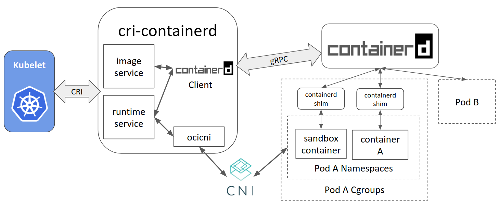

K8s
What is K8's?
With containers, you can run a variety of software components across a cluster of generic servers.
This can help to ensure availability and make it easier to scale resources.
Oh! wait...! I have few questions.
- How can I ensure multiple instances of a piece of software are spread across multiple servers for high availability?
- How can I deploy new code changes and roll them out across the entire cluster?
- How can I create new containers to scale up to handle additional load?
K8's (Orchestration Tool) is the answer for all the above questions.
K8's Architecture
List of components:
- docker - The container runtime to execute the containers on each nodes.
- kubeadm - Tool that simplifies the process of setting up the cluster.
- kubelet - Agent that manages the process of running the containers on each nodes.
- kubectl - Tool to interact with the cluster once it is up.
- Control Plane (only on k8's master) - Series of services that forms the k8's master.
Note: The k8's control plane services will be running on containers under k8's master.
Installing packages
1) Installing docker:
https://docs.docker.com/install/linux/docker-ce/centos/#install-using-the-repository
How to lock a yum package at a particulat version?
/etc/yum/pluginconf.d/versionlock.conf
sudo yum versionlock packagename
yum versionlock delete packagename
sudo yum versionlock docker-ce.x86_64 0:17.12.1.ce-1.el7.centos
2) Installing K8s components (Kubeadm, Kubelet, and Kubectl):
https://kubernetes.io/docs/setup/production-environment/tools/kubeadm/install-kubeadm/
Important ports:
https://kubernetes.io/docs/setup/production-environment/tools/kubeadm/install-kubeadm/#check-required-ports
- sudo yum install kubelet-1.15.6-0 kubeadm-1.15.6-0 kubectl-1.15.6-0 --disableexcludes=kubernetes
Bootstrapping
- sudo setenforce 0
- sudo vi /etc/selinux/config
Change the line that says SELINUX=enforcing to SELINUX=permissive and save the file. - sudo systemctl enable kubelet
- sudo systemctl start kubelet
- sudo vi /etc/sysctl.d/k8s.conf
net.bridge.bridge-nf-call-ip6tables = 1 net.bridge.bridge-nf-call-iptables = 1 - sudo sysctl --system
- sudo swapoff -a
- sudo kubeadm init --pod-network-cidr=10.244.0.0/16
-
You will get a below message.
To start using your cluster, you need to run the following as a regular user:
mkdir -p $HOME/.kube
sudo cp -i /etc/kubernetes/admin.conf $HOME/.kube/config
sudo chown $(id -u):$(id -g) $HOME/.kube/configYou should now deploy a pod network to the cluster.
Run "kubectl apply -f [podnetwork].yaml" with one of the options listed at:
https://kubernetes.io/docs/concepts/cluster-administration/addons/Then you can join any number of worker nodes by running the following on each as root:
kubeadm join 10.82.219.85:6443 --token token --discovery-token-ca-cert-hash sha256:HASH -
kubectl apply -f https://raw.githubusercontent.com/coreos/flannel/bc79dd1505b0c8681ece4de4c0d86c5cd2643275/Documentation/kube-flannel.yml
- kubectl get nodes
Container Runtimes

Recommended Links:
https://www.ianlewis.org/en/container-runtimes-part-1-introduction-container-r
http://alexander.holbreich.org/docker-components-explained/
https://opensource.com/article/18/1/history-low-level-container-runtimes
How to identify which runtime the docker is using?
sudo docker info | grep -i runtime
Runtimes: runc
Default Runtime: runc
How to add another runtime?
docker daemon --add-runtime "<runtime-name>=<runtime-path>"
Example:
docker daemon --add-runtime "oci=/usr/local/sbin/runc"
What is containerd?

- containerd includes a daemon exposing gRPC API over a local UNIX socket.
- The API is a low-level one designed for higher layers to wrap and extend.
- Containerd uses RunC to run containers according to the OCI specification.
Runc subsystem of containerd
- /usr/bin/docker-runc runc (OCI runtime) canbe seen as component of containerd.
- runc is a command line client for running applications packaged according to the OCI format and is a compliant implementation of the OCI spec.
- Containers are configured using bundles. A bundle for a container is a directory that includes a specification file named "config.json" and a root filesystem.
- The root filesystem contains the contents of the container.
-
Assuming you have an OCI bundle you can execute the container:
cd /mycontainer
runc run mycontainerid
containerd-shim
It allows the runtimes, i.e. runc,to exit after it starts the container. This way we don't have to have the long running runtime processes for containers.

https://www.ianlewis.org/en/container-runtimes-part-4-kubernetes-container-run
OCI Specification: https://github.com/opencontainers/runtime-spec/blob/master/spec.md
